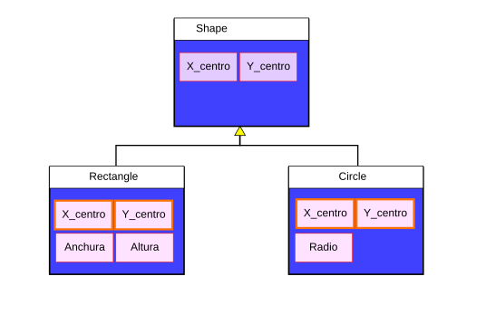
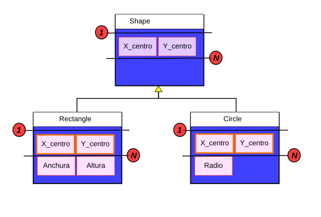
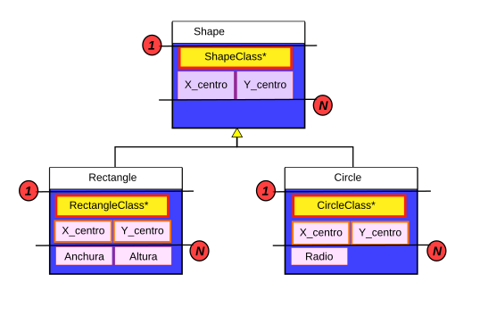
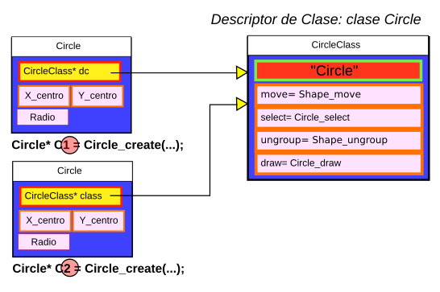

Created: 2025-04-30 mié 01:04
structstruct
del lenguaje.struct creado.struct y podrán estar
ubicados en el almacenamiento global, en la pila o en memoria
dinámica (preferiblemente en este último).struct.typedef float Length;
struct Window {
Length xmin;
Length ymin;
Length xmax;
Length ymax;
}
...
struct Window* w;
...
Lenght x1 = w->xmin; /* Mejor emplear setters/getters */
NombreClase_nombreMetodo.NombreClase_create y en el del destructor NombreClase_destroy./*************************/
/* Clase: Window */
/* Metodo: addToSelected */
/*************************/
Window_addToSelected (struct Window* self, struct Shape* s);
/* Objetos en memoria dinamica */
struct Window* Window_create(Length x, Length y, Length w, Length h) {
struct Window* ventana;
ventana = (struct Window*) malloc(sizeof(struct Window));
ventana -> xmin = x;
ventana -> ymin = y;
ventana -> xmax = x + w;
ventana -> ymax = y + h;
return ventana;
}
void Window_destroy (struct Window* self) {
if (self != NULL) free (self);
}
La simulación de la herencia simple se basa en una idea muy sencilla:
Colocamos al principio de la clase derivada los atributos heredados de la clase base y en el mismo orden en el que están en la clase base.
Esto se puede simplificar si los agrupamos en un struct.



En el siguiente ejemplo un puntero a un Rectangulo se interpreta como un puntero a una Figura:
struct Rectangle* r;
struct Window* w;
/* prototipo de: Window_addToSelected */
void Window_addToSelected (struct Window* self, struct Shape* s);
...
Window_addToSelected (w, r);
/**********************************/
/* Descriptor de clase para Shape */
/**********************************/
struct ShapeClass {
char* classname;
void (*move) ();
Boolean (*selected)();
void (*ungroup) ();
void (*draw) ();
};
/* Descriptor de clase para Circle */ /* Descriptor de clase para Rectangle */
struct CircleClass { struct RectangleClass {
char* classname; char* classname;
void (*move) (); void (*move) ();
Boolean (*selected) (); Boolean (*selected)();
void (*ungroup) (); void (*ungroup) ();
void (*draw) (); void (*draw) ();
}; };
struct RectangleClass RectangleClass = {
"Rectangle",
Shape_move, /* void (*move) () */
Rectangle_selected, /* Boolean (*selected)() */
Shape_ungroup, /* void (*ungroup) () */
Rectangle_draw /* void (*draw) () */
};
struct CircleClass CircleClass = {
"Circle",
Shape_move, /* void (*move) () */
Circle_selected, /* Boolean (*selected)() */
Shape_ungroup, /* void (*ungroup) () */
Circle_draw /* void (*draw) () */
};
struct Circle*
Circle_create(Length x0,Length y0,Length r) {
struct Circle* nc;
nc = (struct Circle*) malloc(sizeof(struct Circle));
nc -> dc = &CircleClass; /* descriptor de clase */
nc -> x = x0;
nc -> y = y0;
nc -> radius = r;
return nc;
}
Visualmente podríamos representarlo así:

Si crearamos un círculo y le enviáramos mensajes:
/* Primero: Ya se han creado los descriptores de clase */
struct Shape* f;
struct Circle* c1 = Circle_create(...);
f = c1;
f->dc->move(f, ...); /* Invoca Figura::mover */
f->dc->draw(f, ...); /* Invoca Circulo::dibujar */
// Compilar con valac -C valaoop.vala
// Clase base
public class Droid {
public Droid (string n) {
name = n;
}
public string name {get; set;}
public virtual void move (int x, int y) {
this.x = x;
this.y = y;
}
protected int x;
protected int y;
}
// Clase derivada
public class AquaDroid : Droid {
public AquaDroid(string n, int md = 100) {
base (n);
depth = md;
}
public override void move (int x, int y) {
this.x = x/2;
this.y = y/2;
}
private int depth;
}